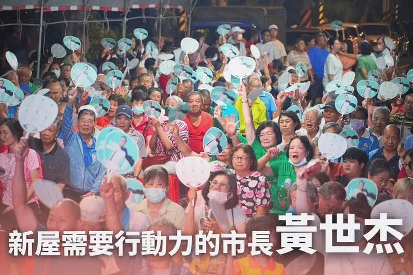
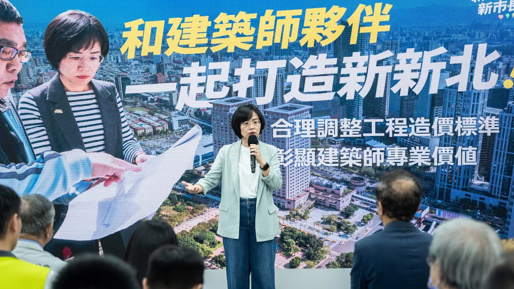
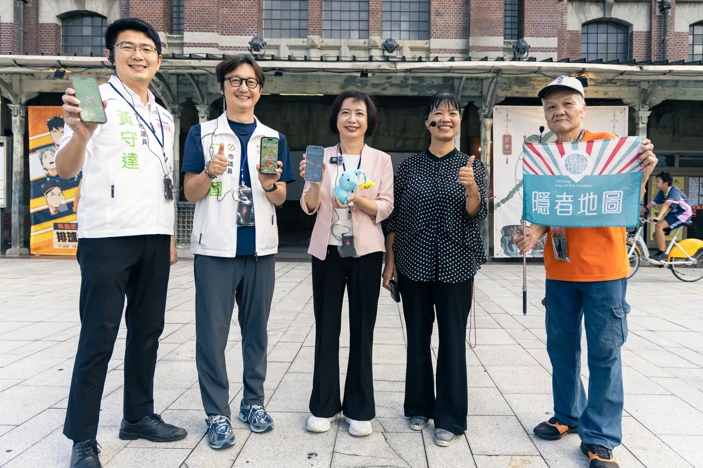
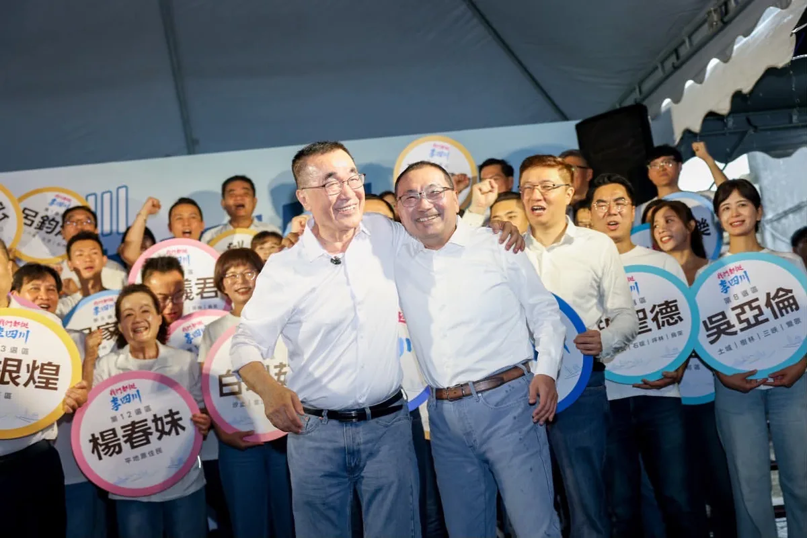

@prof.kochihen:四年前，我的第一場廟口開講從三鳳宮出發；再度回到這裡，初心沒變，決心更堅定。 曾經繁華的三民區，不該慢慢老去。 商圈活化、老屋更新、長輩照顧、幸福川環境提升；我要讓三民區重新發光，成為高雄再起飛的原點！ 「投給柯志恩，就是投給善良、正向的力量。」 高雄值得更好的未來，高雄也值得再次站上世界舞台！
Posts
@prof.kochihen:四年前，我的第一場廟口開講從三鳳宮出發；再度回到這裡，初心沒變，決心更堅定。 曾經繁華的三民區，不該慢慢老去。 商圈活化、老屋更新、長輩照顧、幸福川環境提升；我要讓三民區重新發光，成為高雄再起飛的原點！ 「投給柯志恩，就是投給善良、正向的力量。」 高雄值得更好的未來，高雄也值得再次站上世界舞台！

在文燦市長時代，新屋曾經是被重視的焦點。換張善政後，新屋又被邊緣化，成為被遺忘的邊陲。 市長如果有心，能為地方帶來的改變無可限量。 但這幾年，新屋人看到的只有停滯跟空轉。 像是動也不動的新屋都市計畫。在世杰擔任立委期間，和桃園市議員 陳睿生並肩作戰，積極督促內政部，市府只要積極補件就能順利推進。 遺憾的是，張市府消極以對。攸關市民生活品質的公園綠地、住宅區開闢，以及街上繁榮的機會，就這樣被擱置一旁。 新屋要蛻變，產業必須升級，小孩才不必背井離鄉。如果三年前台積電順利進駐，搭配新梅龍快速道路的串聯，新屋早就是高科技廊帶的關鍵腹地。 張善政讓桃園錯失寶貴的黃金三年，卻回頭跟鄉親說，「不要覺得都沒動」？ 新屋人的生活品質與下一代的未來，禁不起散政繼續空轉。 翻轉新屋，需要真正有魄力、有願景、傾聽基層的行動派。 黃世杰已經準備好，把專業與歷練，毫無保留奉獻給最摯愛的家鄉！我知道大家的期待，不只是疼惜新屋子弟，而是期盼一個懂桃園、把新屋放在心上的市長。 11/28，讓我們一起站出來支持黃世杰、翻轉大桃園。終結怠惰散政，讓心桃園全面動起來！
北區，是臺中最早發展的區域之一，我以前就讀的臺中一中就在這裡，高中三年的時光，到現在都還清晰地映在腦海裡。北區對我來說，不只是熟悉，更有著滿滿的青春回憶。 改變城市的目的，是要讓民眾生活更進步。從公共設施改善、都市更新，到銀髮住宅安全與科技導入，不僅是要讓城市不斷進步，還要讓長輩住得安心、年輕人打拚放心。未來，我們會一起努力，讓城市機能更完善、生活更便利！ #臺中啟程 #打造旗艦城 #北區再升級


#三民區 曾是高雄最繁華的起點，我要讓它成為高雄再起飛的原點！ 今晚廟口音樂會來到 #三鳳宮 ，對我有著特別的意義。四年前，我第一場廟口開講就在三鳳宮，那天細雨不停，但階梯上依然坐滿了人，陪伴我的議員 #童燕珍、 #黃柏霖、 #黃香菽 都在身旁；四年後再回到這裡，看著熟悉的人群與熟悉的廟埕，心中只有更多感謝，也更堅定要為高雄改變的決心。 今晚特別感謝「勇媽」嘉義市長 勇媽阿惠 - 黃敏惠，以及 #高雄市嘉義同鄉會 蔡崇銘理事長率領幹部及成員到場相挺。黃市長說，她父親過去就住在三民區大順二路，與三民有著特別的緣分。她更以17年的市政經驗勉勵我，四年前雖然落選，但我沒有離開高雄，而是持續走遍每個角落、認真為高雄打拚。這份鼓勵，我會一直記在心裡。 三民區對我而言，承載著一個屏東鄉下孩子的夢想。小時候，高雄車站是令人嚮往的繁華世界；哥哥讀雄中、叔叔讀高醫，三民區幾乎就是我全部的世界。 然而今天的三民區，卻面臨「兩個老」的挑戰：一個是高齡化，65歲以上人口數高達7.3萬人；另一個是老屋問題，高雄超過40年的住宅近6萬戶，都集中在三民區，曾經最繁華的地方，不該在時代變遷中逐漸失去光彩。 因此，我提出商圈活化計畫，盤點高雄車站周邊的長明商圈、後驛商圈等重要據點，以更友善的創業環境與租金條件吸引年輕人進駐，讓商機重新回來；推動都市更新與老屋整建，在都更完成前提供必要補助，改善外牆、水管等老舊問題；針對住在老公寓的長輩，補助設置爬梯機，讓長輩能自由、安全的出門。 我也主張將敬老卡點數由600點提高到1000點、擴大使用範圍，讓長輩買菜、看病更方便；面對高雄4萬多名失智長者，推動智慧手環協助照護家庭，因為我相信：「記憶會走遠，但愛不會迷路。」 高雄有山、有海、有港，更應該有讓孩子看見世界的眼界。我希望成為一位重視教育的市長，提升教育經費，培養下一代的國際觀與競爭力，讓高雄的孩子勇敢走向世界。 從商圈活化、老屋重建，到治水改善、幸福川整體環境升級、自行車路網串聯，我希望讓高雄不只是宜居，更是一座充滿希望與活力的城市。讓年輕人住得起、買得起、養得起；讓長輩有照顧、有尊嚴；讓資源更平均，讓機會更公平。 黃敏惠市長今晚說：「投給柯志恩，就是投給善良、正向的力量。」我深受感動。高雄值得更好的未來，高雄也值得再一次站上世界舞台。 — 特別感謝高雄市嘉義同鄉會今天的共襄盛舉，包括蔡崇銘理事長、黃瑞榮副理事長、劉鴻德常務理事、邱政雄常務監事、林金藝理事、李文華執行長、黃明治理事、鄧樹欉理事、郭明哲理事，以及各位里長前輩仕紳。

海納百川，「侯李」好市長。 團結一心，我們都挺李四川。 今天一早，我在 @hou.yuih 侯友宜市長、國民黨籍議員與參選人、無黨籍議員以及民眾黨議員與參選人陪同下，正式登記參選新北市長。 「我把棒子交給李四川」，侯市長這句話，是鼓勵我向前最大的動力。 一路走來，我與侯友宜市長始終有默契，始終並肩作戰。我們共同的信念，是不辜負市民期待，要「侯李」好市長。 一路走來，我不分黨派不分顏色，廣納意見爭取最大支持， 團結一心，要「海納百川」。 軌道123、都更5夠力，是我接下這一棒之後，要先做的兩件事。 我這一生都是公務人員，沒有資源，沒有政治勢力的靠山，我的心中與侯市長相同，只有人民。 我最堅強的後盾，是404萬新北市民。 拿鐵鎚的李四川，沒有變。拚建設的幹勁，只會更強。 我是做事的人，做成事的人。 請放心把新北的未來交給我，李四川上場，會打贏這一仗。 海納百川，才能匯聚眾力；匯聚眾力，必將衝出勝利。

@a_chun1973:昨天完成參選登記後，我來到承載青春記憶的台中舊城，參加「從隱者地圖看見台中城」走讀活動。 從舊火車站出發，沿著熟悉的街道慢慢走，重新認識這座城市的歷史，也發現許多平常匆匆經過、容易錯過的風景。 我和江肇國 @tcoppazhaoguo 、黃守達 @huangshouda 也打開皮克敏一起沿途種花🌱 ，讓走讀多了一點趣味！ 中區曾是台中城市發展的心臟，有著豐富的歷史建築、街區紋理與文化記憶。未來我要推動「舊城創新」，投入更多都市更新資源、改善人行環境及停車空間，更要串聯交通、觀光與商圈。 保存舊城的記憶，為舊城注入新的活力。讓老台中被看見，讓新台中繼續向前！


@su.chiaohui:巧慧當市長！加速都更、挺建築專業 打造更宜居的新北 未來我擔任新北市長，不只要加速城市建設，讓專業被合理尊重、也讓制度成為大家的助力！ ✅加速都更 1. 成立都市更新局，提高層級、增加員額與預算 2. 建立單一窗口，整合專業團隊，加速案件推進 3. 推動「項目明確、標準明確、時間明確」都更審議改革 4. 導入AI數位協審，減少重複人工與公文作業，讓進度透明可查 ✅挺建築專業 1. 啟動建築執照工程造價標準檢討 2. 合理反映營建物價、人力成本及建築師的專業價值 3. 與建築師公會合作，檢討繁複、過時的行政規範

龍介已正式登記參選2026台南市長！將推動馬上辦中心、尿布免費、0-6歲小孩健保免費、6-18歲加碼補助2500元、你生孩子我供房子
龍介正式登記參選台南市長！ 四年前，龍介提出「十大新政」，向台南鄉親報告，我們想怎麼改變這座城市。 四年過去，台南面對的問題更多，鄉親對市政的期待也更高。這一次龍介再站出來，當然不能只是把四年前的政見重新拿出來。 既然叫「加強版」，就要看得更準、做得更實在，力道也要更強。 這一次，龍介把十大新政全面升級。每一項新政，都再提出三個具體做法。就像搭弓上箭，一項新政射出三支箭，十大新政，就是三十支箭。 每一支箭，不是為了喊口號，而是瞄準台南真正需要解決的問題，提出具體解方。從生子、育兒、備孕，到交通、治水、都更，再到教育、農漁、廉能治理與老人福利，三十支箭，就是三十項龍介準備替台南鄉親做到的政策。 方向要看得準，箭更要射得中。接下來，龍介就一支一支箭，向鄉親報告，我們要怎麼把台南的問題，一項一項解決。 🏹生子三箭：最強催生 🔹首創全國最強婚育宅：「你生孩子，我供房子」，透過都更容積回饋、公辦重劃土地、住宅基金運用，提供住宅，解決台南青年婚育的居住痛點。 🔹最強育兒補助：0到15歲孩子每月加碼5000元；中央跟進延長，6至18歲中央助存2500元，龍介加碼現金2500元，讓台南孩子每月領好領滿5000元。 🔹最強生育津貼：中央補助10萬，龍介霸氣加碼第一胎3萬、第二胎以上每胎5萬。 🏹育兒三箭：育兒無憂 🔹幼兒日常免費：推動0到3歲幼兒尿布免費，減輕新手父母育嬰負擔。 🔹醫療健保免費：實施0到6歲幼兒健保全額免費，由市府補助，築起嬰幼兒健康的終極防禦網。 🔹公托機構翻倍：4年內讓全市公托機構數量翻倍，提升公共托育量能，擴大育兒服務，減輕家庭負擔。 🏹備孕三箭：生育自主 🔹女性補助凍卵：全面補助25至40歲女性凍卵，終身一次3萬元，捍衛女性生育自主權。 🔹男性凍精補助：補助男性凍精，每人補助上限3000元。 🔹抽血

今天下午，龍介在國民黨、民眾黨24位議員夥伴陪同下完成登記，正式參選台南市長！ 一路從選委會回到競選總部，看見沿途鄉親揮手加油，龍介心裡只有一個念頭：這一次，我們一定要團結起來，翻轉大台南，讓人民贏一次！ 台南已經33年沒有政黨輪替。33年，真的夠久了。 這些年，官商勾結、魚死電生、採購爭議、廢棄物亂象一件接著一件。龍介走遍基層，也聽到越來越多鄉親說：「機會給這麼久，也該換人做看看了。」 龍介站出來，就是要替台南爭一個改變的機會。給龍介四年，把積弊一件一件清掉，把市政一項一項做好，讓市政府真正站在人民這一邊。 目前台南最不能再拖的，就是少子女化。生育率落在全國後段班、六都倒數第二，這不只是生不生孩子的問題，更關係到台南未來有沒有人才、產業能不能繼續發展。 因此龍介提出全國最強婚育宅、最強生育津貼、育兒津貼每月加碼2500元的有感政策，就是要讓年輕人在台南敢結婚、敢生、養得起，也留得下來。 現在花在孩子身上的每一塊錢，不只是福利，更是在投資台南未來的人才與希望。 今天登記，只是一個開始。33年夠久了，給龍介四年，給台南一次真正改變的機會。 藍白團結，議員全壘打！ 翻轉大台南，人民贏一次！


桃園持續成長，但在城市發展的同時，我們也希望讓年輕人看見未來、留在桃園 四年前，桃園人口是228萬；到了今年，已接近236萬。 面對持續成長的城市，我們一方面推動捷運建設與整體開發，充實城市生活機能；另一方面，也要思考如何讓城市發展的成果惠及更多市民，讓桃園的年輕人能夠留下來。 #桃園首件捷運土地開發案正式簽約 TOD就是以捷運為核心，帶動周邊交通、商業、住宅與生活機能一起發展。這次，桃園首件捷運土地開發案正式簽約，就從蘆竹的機捷A10山鼻站開始。 由宏匯集團、群光電能科技及甲山林建設共同組成的「宏匯光合聯盟」投入，將進一步帶動場站周邊生活機能與區域發展，打造結合商場與住宅的複合大樓，並強化周邊轉乘、停車機能。未來的山鼻站，將會變得很不一樣。 #八德大湳整開區納入可負擔住宅規劃 上週，桃園市都委會審議通過八德大湳森林公園周邊整體開發計畫，除了完善綠地、公共設施與道路，也正式將可負擔住宅納入規劃。加上這項計畫，目前市府已掌握超過300戶可負擔住宅量能。 從提出可負擔住宅構想，到一項項整體開發納入可負擔住宅，我們持續用行動告訴大家，#桃園落實居住正義的決心不會改變。 目前，《桃園市可負擔住宅自治條例》已送行政院審查，市府也持續與中央溝通。我們已經把所有配套準備好，只要法規程序完備，就能讓更多年輕人在桃園安心成家。 有方便的交通、有好的工作，也有一個負擔得起的房子。我們會努力讓桃園變得更好，讓年輕人在這座城市安心成家。

新北衛星變繁星，打造 #新北光榮感！ 林姓宗親會的團結與榮譽感，也是我對新北的期待。我希望建立屬於新北人的 #城市認同感，讓每一位新北市民，以新北為榮。 新北有都市區，也有山海城鎮。未來我會成立 #都市更新局，給市民更安全、舒適的居住環境，也會透過 #新皇冠海岸 與 #鑽石山城 計畫，打造新北國際觀光新品牌。 新北29區，每一區都是一顆閃耀的星星。新時代、新市長，我會帶領新北大步向前，新北市民會以新北為榮！
北區，是臺中最早發展的區域之一，我以前就讀的臺中一中就在這裡，高中三年的時光，到現在都還清晰地映在腦海裡。北區對我來說，不只是熟悉，更有著滿滿的青春回憶。 改變城市的目的，是要讓民眾生活更進步。從公共設施改善、都市更新，到銀髮住宅安全與科技導入，不僅是要讓城市不斷進步，還要讓長輩住得安心、年輕人打拚放心。未來，我們會一起努力，讓城市機能更完善、生活更便利！ #臺中啟程 #打造旗艦城 #北區再升級

近五十家產業、職業工會幹部及基層勞工代表，一起成為「沈伯洋勞工後援會」最關鍵的力量！ ⠀ 今天大家願意來到現場，願意把對台北、對勞動環境的期待交給我，這份信任，我會牢牢記得。 ⠀ 謝謝 陳時中政委、 洪申翰 Sun-Han部長、 林月琴 Yueh-Chin委員到場支持， 顏蔚慈 議員、 陳賢蔚 議員擔任大會主持人。 謝謝 #林肇俊 理事長、 #戴國榮 理事長分別擔任職業工會及產業工會後援會總會長並接受授旗，以及 #鄭力嘉 副總會長代表致詞。 也謝謝每一位工會幹部與基層勞工夥伴的力挺！ ⠀ 我要把勞工的聲音帶進市政府。 讓每一份撐起台北日常的勞動，都能被看見、被尊重； 也讓每一位在這座城市打拚的人，都有餘裕照顧自己與家人，安穩地生活。 ⠀ 我認為，市府本應該做工會及勞工的後盾。 ⠀ 市府應該簡化工會的行政作業、媒合共享辦公空間，也要派「AI 教練」直接進入不同產業，陪伴大家找到真正用得上的工具。面對無人駕駛與 AI 帶來的轉型，不能等衝擊發生，再叫勞工自己想辦法。 ⠀ 戶外勞工需要遮蔭與休息的空間、通勤者需要安全的道路與人行道、勞工家庭需要負擔得起的住宅。 ⠀ 中央的制度與資源要真正送達市民手中，地方政府就是最後一哩路。 ⠀ 請大家持續向身旁朋友介紹沈伯洋。 11月28日，讓沈伯洋成為你的市長！ ⠀ #台北順起來 #你的市長沈伯洋
0904受訪 #受訪 #市政辯論 #市政問題解決方案討論 #兒童保護 #1999 #交通議題 #衛生議題 #都更議題 #台北產業生態系

昨天完成參選登記後，我來到承載青春記憶的台中舊城，參加「從隱者地圖看見台中城」走讀活動。 從舊火車站出發，沿著熟悉的街道慢慢走，重新認識這座城市的歷史，也發現許多平常匆匆經過、容易錯過的風景。 我和江肇國、黃守達也打開皮克敏一起沿途種花🌱 ，讓走讀多了一點趣味！ 中區曾是台中城市發展的心臟，有著豐富的歷史建築、街區紋理與文化記憶。未來我要推動「舊城創新」，投入更多都市更新資源、改善人行環境及停車空間，更要串聯交通、觀光與商圈。 保存舊城的記憶，為舊城注入新的活力。讓老台中被看見，讓新台中繼續向前！
地方建設 巧慧當市長！加速都更、挺建築專業 打造更宜居的新北 我會繼續努力，用新方法解決老問題，讓都更有效率、讓建築專業更有價值，也讓每個新北的街區不僅安全有品質，更有自己的特色！ 2026.09.03


龍介已正式登記參選2026台南市長！將推動馬上辦中心、尿布免費、0-6歲小孩健保免費、6-18歲加碼補助2500元、你生孩子我供房子

龍介正式登記參選台南市長！ 四年前，龍介提出「十大新政」，向台南鄉親報告，我們想怎麼改變這座城市。 四年過去，台南面對的問題更多，鄉親對市政的期待也更高。這一次龍介再站出來，當然不能只是把四年前的政見重新拿出來。 既然叫「加強版」，就要看得更準、做得更實在，力道也要更強。 這一次，龍介把十大新政全面升級。每一項新政，都再提出三個具體做法。就像搭弓上箭，一項新政射出三支箭，十大新政，就是三十支箭。 每一支箭，不是為了喊口號，而是瞄準台南真正需要解決的問題，提出具體解方。從生子、育兒、備孕，到交通、治水、都更，再到教育、農漁、廉能治理與老人福利，三十支箭，就是三十項龍介準備替台南鄉親做到的政策。 方向要看得準，箭更要射得中。接下來，龍介就一支一支箭，向鄉親報告，我們要怎麼把台南的問題，一項一項解決。 🏹生子三箭：最強催生 🔹首創全國最強婚育宅：「你生孩子，我供房子」，透過都更容積回饋、公辦重劃土地、住宅基金運用，提供住宅，解決台南青年婚育的居住痛點。 🔹最強育兒補助：0到15歲孩子每月加碼5000元；中央跟進延長，6至18歲中央助存2500元，龍介加碼現金2500元，讓台南孩子每月領好領滿5000元。 🔹最強生育津貼：中央補助10萬，龍介霸氣加碼第一胎3萬、第二胎以上每胎5萬。 🏹育兒三箭：育兒無憂 🔹幼兒日常免費：推動0到3歲幼兒尿布免費，減輕新手父母育嬰負擔。 🔹醫療健保免費：實施0到6歲幼兒健保全額免費，由市府補助，築起嬰幼兒健康的終極防禦網。 🔹公托機構翻倍：4年內讓全市公托機構數量翻倍，提升公共托育量能，擴大育兒服務，減輕家庭負擔。 🏹備孕三箭：生育自主 🔹女性補助凍卵：全面補助25至40歲女性凍卵，終身一次3萬元，捍衛女性生育自主權。 🔹男性凍精補助：補助男性凍精，每人補助上限3000元。 🔹抽血檢驗補助：全額補貼AMH抽血檢驗，每人上限1000元，把握女性生育黃金期，為備孕、凍卵、試管嬰兒療程做評估。 🏹交通三箭：打通路網 🔹捷運十字路網：推動台南捷運藍線盡速開工、如期完工；加速綠線規劃，十字路網早日成形。 🔹交通建設加速：監督「北外環快速道路」2031年如期通車；全面優化市區公車路網，廣設綠色人行道，改善人行環境。 🔹整頓交通亂象：鐵腕取締酒駕毒駕，檢討執法、交通罰單合理性；全面優化全市路型號誌，4年內翻轉台南交通。 🏹治水三箭：終結水患 🔹整合治水辦公室：由市長坐鎮，成立專責「治水整合辦公室」，整合跨局處資源，打破各自為政、事權不一陋習，提升治水效率。 🔹延長下水道建設：檢討台南雨水下水道系統規劃，拉長下水道建設公里數，極大化易淹水區的防汛排洪極限。 🔹建構AI智慧水網：建構大台南「治水AI智慧水網」，運用AI系統、物聯網感測網路，整合資訊實現精準調度。 🏹都更三箭：翻轉舊城 🔹全面強化都更：全面推動防災型都更、危老重建；加速社宅、婚育宅規劃，翻轉台南新舊軸線。 🔹補助老屋健檢：補助老屋結構健檢，化被動為主動，提前掌握老屋結構危機，保障市民與財產安全。 🔹AI地震防災網：建構大台南「AI智慧地震防災網」，強化地震監測、預警與災害應變，提升城市防災韌性。 🏹教育三箭：育才扎根 🔹免費營養午餐：全面落實國中小營養午餐免費，減輕家長負擔，確保學童吃的健康。 🔹週週鮮奶強身：推動學生週週喝鮮奶，提供優質鈣質與黃金營養，幫助孩子健康成長、強健體魄。 🔹雙語教學深化：全面深化台語與英語的「雙語教育」，讓在地文化、國際視野在台南同步扎根。 🏹農漁三箭：產業翻新 🔹清查光電亂象：全面清查台南光電與魚電共生爭議案件，釐清違法與不當開發問題，該還地就還地，全力守護農漁民權益與家鄉環境。 🔹建立現代冷鏈：推動現代化的冷鏈及倉儲運輸建設，強化產銷調節能力，穩定農漁產品價格。 🔹輔導外銷出口：輔導農漁產品加工升級，提升產品附加價值，拓展多元國際市場與外銷通路。 🏹廉能三箭：民意直達 🔹打破利益包袱：拋開選票壓力、派系包袱，堅持「只做一任4年」，大刀闊斧推改革，絕不為連任向任何利益團體低頭妥協。 🔹月月首長下鄉：強化市府行動力，每月和首長下鄉，輪流到議員選區聽取民意，推動建設。 🔹全面行動治理：龍介承諾，上任後「週一到週五天天直播Call-in」，市府政務官輪番上陣，直接面對民意。市民有問題就直接講、有陳情就直接反映，市長在第一線傾聽陳情，解決民眾疑難雜症。 🏹老人福利三箭：老有所養 🔹健保全額補助：推動老人健保費全額補助，取消排富條款，對長者照顧一視同仁，讓長輩安心養老、放心就醫。 🔹擴大敬老交通：推動台南敬老卡點數化，解鎖使用情境，點數看得到，也用得到，整合計程車、1966長照接送、日常購物與看病掛號。 🔹社區共餐巡迴：推動社區共餐與醫療巡迴車，無縫接軌中央長照3.0政策，讓偏鄉老人照顧再升級。 龍介的「十大新政加強版」。從準備成家的少年人、正在養囝仔的爸媽，到每天為生活打拚的市民、辛苦一輩子的長者；從交通、治水、都更，到農漁產業與市府治理，龍介要做的，就是把台南人每天真正遇到的問題，一項一項處理好。 四年前，我們提出十大新政；四年後，我們把政策做得更完整、更有力。三十支箭，不是三十句口號，每一支箭，都要射中台南最需要改革的地方。 龍介準備好了。用4年，拚台南全面升級；用三十支箭，顧好台南每一個家庭、每一位鄉親！


@zenolai:上週五，小港松富街擋土牆發生坍塌，我第一時間聯繫相關單位，並趕赴現場掌握狀況。 今天上午，我再次前往現場了解最新情形，確認居民安置與邊坡安全，也要求相關單位持續加強現場防護，確保居民安全。 受到近期連續降雨影響，邊坡土體含水量增加，加上擋土牆已有34年，使原有邊坡承受更大壓力，凸顯面對極端氣候，老舊設施需要持續強化的重要性。 目前市府已預防性疏散7戶、28位居民，並完成危險樹木移除、崩塌區域覆蓋及安全防護，優先確保居民安全。 接下來，我會持續協調中央、地方，爭取復建經費支持。目前初步評估，整體復建工程經費可能超過一億元，將請市府儘速完成復建計畫，加快工程推動。 除了重建擋土牆，也同步檢視周邊邊坡，做好必要補強、排水與智慧監測，提升整體防護能力，讓工程不只是修復，更能從根本降低未來風險。把安全做好，把韌性做強，讓居民住得更安心。


桃園持續成長，但在城市發展的同時，我們也希望讓年輕人看見未來、留在桃園 四年前，桃園人口是228萬；到了今年，已接近236萬。 面對持續成長的城市，我們一方面推動捷運建設與整體開發，充實城市生活機能；另一方面，也要思考如何讓城市發展的成果惠及更多市民，讓桃園的年輕人能夠留下來。 #桃園首件捷運土地開發案正式簽約 TOD就是以捷運為核心，帶動周邊交通、商業、住宅與生活機能一起發展。這次，桃園首件捷運土地開發案正式簽約，就從蘆竹的機捷A10山鼻站開始。 由宏匯集團、群光電能科技及甲山林建設共同組成的「宏匯光合聯盟」投入，將進一步帶動場站周邊生活機能與區域發展，打造結合商場與住宅的複合大樓，並強化周邊轉乘、停車機能。未來的山鼻站，將會變得很不一樣。 #八德大湳整開區納入可負擔住宅規劃 上週，桃園市都委會審議通過八德大湳森林公園周邊整體開發計畫，除了完善綠地、公共設施與道路，也正式將可負擔住宅納入規劃。加上這項計畫，目前市府已掌握超過300戶可負擔住宅量能。 從提出可負擔住宅構想，到一項項整體開發納入可負擔住宅，我們持續用行動告訴大家，#桃園落實居住正義的決心不會改變。 目前，《桃園市可負擔住宅自治條例》已送行政院審查，市府也持續與中央溝通。我們已經把所有配套準備好，只要法規程序完備，就能讓更多年輕人在桃園安心成家。 有方便的交通、有好的工作，也有一個負擔得起的房子。我們會努力讓桃園變得更好，讓年輕人在這座城市安心成家。 A10車站專用區土地開發案模擬圖 A10車站專用區土地開發案模擬圖

新北衛星變繁星，打造 #新北光榮感！ 林姓宗親會的團結與榮譽感，也是我對新北的期待。我希望建立屬於新北人的 #城市認同感，讓每一位新北市民，以新北為榮。 新北有都市區，也有山海城鎮。未來我會成立 #都市更新局，給市民更安全、舒適的居住環境，也會透過 #新皇冠海岸 與 #鑽石山城 計畫，打造新北國際觀光新品牌。 新北29區，每一區都是一顆閃耀的星星。新時代、新市長，我會帶領新北大步向前，新北市民會以新北為榮！

#三民區 曾是高雄最繁華的起點，我要讓它成為高雄再起飛的原點！ 今晚廟口音樂會來到 #三鳳宮 ，對我有著特別的意義。四年前，我第一場廟口開講就在三鳳宮，那天細雨不停，但階梯上依然坐滿了人，陪伴我的議員 #童燕珍、 #黃柏霖、 #黃香菽 都在身旁；四年後再回到這裡，看著熟悉的人群與熟悉的廟埕，心中只有更多感謝，也更堅定要為高雄改變的決心。 今晚特別感謝「勇媽」嘉義市長 勇媽阿惠 - 黃敏惠，以及 #高雄市嘉義同鄉會 蔡崇銘理事長率領幹部及成員到場相挺。黃市長說，她父親過去就住在三民區大順二路，與三民有著特別的緣分。她更以17年的市政經驗勉勵我，四年前雖然落選，但我沒有離開高雄，而是持續走遍每個角落、認真為高雄打拚。這份鼓勵，我會一直記在心裡。 三民區對我而言，承載著一個屏東鄉下孩子的夢想。小時候，高雄車站是令人嚮往的繁華世界；哥哥讀雄中、叔叔讀高醫，三民區幾乎就是我全部的世界。 然而今天的三民區，卻面臨「兩個老」的挑戰：一個是高齡化，65歲以上人口數高達7.3萬人；另一個是老屋問題，高雄超過40年的住宅近6萬戶，都集中在三民區，曾經最繁華的地方，不該在時代變遷中逐漸失去光彩。 因此，我提出商圈活化計畫，盤點高雄車站周邊的長明商圈、後驛商圈等重要據點，以更友善的創業環境與租金條件吸引年輕人進駐，讓商機重新回來；推動都市更新與老屋整建，在都更完成前提供必要補助，改善外牆、水管等老舊問題；針對住在老公寓的長輩，補助設置爬梯機，讓長輩能自由、安全的出門。 我也主張將敬老卡點數由600點提高到1000點、擴大使用範圍，讓長輩買菜、看病更方便；面對高雄4萬多名失智長者，推動智慧手環協助照護家庭，因為我相信：「記憶會走遠，但愛不會迷路。」 高雄有山、有海、有港，更應該有讓孩子看見世界的眼界。我希望成為一位重視教育的市長，提升教育經費，培養下一代的國際觀與競爭力，讓高雄的孩子勇敢走向世界。 從商圈活化、老屋重建，到治水改善、幸福川整體環境升級、自行車路網串聯，我希望讓高雄不只是宜居，更是一座充滿希望與活力的城市。讓年輕人住得起、買得起、養得起；讓長輩有照顧、有尊嚴；讓資源更平均，讓機會更公平。 黃敏惠市長今晚說：「投給柯志恩，就是投給善良、正向的力量。」我深受感動。高雄值得更好的未來，高雄也值得再一次站上世界舞台。 — 特別感謝高雄市嘉義同鄉會今天的共襄盛舉，包括蔡崇銘理事長、黃瑞榮副理事長、劉鴻德常務理事、邱政雄常務監事、林金藝理事、李文華執行長、黃明治理事、鄧樹欉理事、郭明哲理事，以及各位里長前輩仕紳。

@hammer__lee:海納百川，「侯李」好市長。 團結一心，我們都挺李四川。 9/4一早，我在 侯友宜 市長、國民黨籍議員與參選人、無黨籍議員以及民眾黨議員與參選人陪同下，正式登記參選新北市長。 「我把棒子交給李四川」，侯市長這句話，是鼓勵我向前最大的動力。 一路走來，我與侯友宜市長始終有默契，始終並肩作戰。我們共同的信念，是不辜負市民期待，要「侯李」好市長。 一路走來，我不分黨派不分顏色，廣納意見爭取最大支持， 團結一心，要「海納百川」。 軌道123、都更5夠力，是我接下這一棒之後，要先做的兩件事。 我這一生都是公務人員，沒有資源，沒有政治勢力的靠山，我的心中與侯市長相同，只有人民。 我最堅強的後盾，是404萬新北市民。 拿鐵鎚的李四川，沒有變。拚建設的幹勁，只會更強。 我是做事的人，做成事的人。 請放心把新北的未來交給我，李四川上場，會打贏這一仗。 海納百川，才能匯聚眾力；匯聚眾力，必將衝出勝利。
登記後首站走讀台中舊城 何欣純攜皮克敏沿途「種花」 台中市長候選人何欣純完成參選登記後，首場 […] 〈 登記後首站走讀台中舊城 何欣純攜皮克敏沿途「種花」 〉這篇文章最早發佈於《 何欣純官方網站｜2026 台中市長候選人 》。
巧慧當市長！加速都更、挺建築專業 打造更宜居的新北 過去，我和建築師公會的夥伴們有很多共同努力的經驗，包括疫情期間，我們一起成立「防疫建築健診工作隊」，免費替醫院和社區建築健檢；我也曾就「深坑廳」修復的案例向建築師公會請益，推動 #鶯歌國小舊校舍修復，讓老舊的空間有新的樣貌。 這些經驗都讓我更深刻感受到，建築師不只是替大家蓋一棟房子，更是守護城市安全、保存歷史記憶，帶著城市走向未來的重要力量。 未來我擔任新北市長，不只要加速城市建設，讓專業被合理尊重、也要讓制度成為大家的助力！ ✅加速都更 1. 成立 #都市更新局，提高層級、增加員額與預算 2. 建立單一窗口，整合專業團隊，加速案件推進 3. 推動「項目明確、標準明確、時間明確」都更審議改革 4. 導入 #AI數位協審，減少重複人工與公文作業，讓進度透明可查 ✅挺建築專業 1. 啟動 #建築執照工程造價標準檢討 2. 合理反映營建物價、人力成本及建築師的專業價值 3. 與建築師公會合作，檢討繁複、過時的行政規範 我會繼續努力，用新方法解決老問題，讓都更有效率、讓建築專業更有價值，也讓每個新北的街區不僅安全有品質，更有自己的特色！

@hsiehlungchieh:龍介已正式登記參選2026台南市長！將推動馬上辦中心、尿布免費、0-6歲小孩健保免費、6-18歲加碼補助2500元、你生孩子我供房子

@hsiehlungchieh:龍介正式登記參選台南市長！ 四年前，龍介提出「十大新政」，向台南鄉親報告，我們想怎麼改變這座城市。 四年過去，台南面對的問題更多，鄉親對市政的期待也更高。這一次龍介再站出來，當然不能只是把四年前的政見重新拿出來。 既然叫「加強版」，就要看得更準、做得更實在，力道也要更強。 這一次，龍介把十大新政全面升級。每一項新政，都再提出三個具體做法。就像搭弓上箭，一項新政射出三支箭，十大新政，就是三十支箭。 每一支箭，不是為了喊口號，而是瞄準台南真正需要解決的問題，提出具體解方。從生子、育兒、備孕，到交通、治水、都更，再到教育、農漁、廉能治理與老人福利，三十支箭，就是三十項龍介準備替台南鄉親做到的政策。 方向要看得準，箭更要射得中。接下來，龍介就一支一支箭，向鄉親報告，我們要怎麼把台南的問題，一項一項解決。 🏹生子三箭：最強催生 🔹首創全國最強婚育宅：「你生孩子，我供房子」，透過都更容積回饋、公辦重劃土地、住宅基金運用，提供住宅，解決台南青年婚育的居住痛點。

@hsiehlungchieh:今天下午，龍介在國民黨、民眾黨24位議員夥伴陪同下完成登記，正式參選台南市長！ 一路從選委會回到競選總部，看見沿途鄉親揮手加油，龍介心裡只有一個念頭：這一次，我們一定要團結起來，翻轉大台南，讓人民贏一次！ 台南已經33年沒有政黨輪替。33年，真的夠久了。 這些年，官商勾結、魚死電生、採購爭議、廢棄物亂象一件接著一件。龍介走遍基層，也聽到越來越多鄉親說：「機會給這麼久，也該換人做看看了。」 龍介站出來，就是要替台南爭一個改變的機會。給龍介四年，把積弊一件一件清掉，把市政一項一項做好，讓市政府真正站在人民這一邊。 目前台南最不能再拖的，就是少子女化。生育率落在全國後段班、六都倒數第二，這不只是生不生孩子的問題，更關係到台南未來有沒有人才、產業能不能繼續發展。 因此龍介提出全國最強婚育宅、最強生育津貼、育兒津貼每月加碼2500元的有感政策，就是要讓年輕人在台南敢結婚、敢生、養得起，也留得下來。 現在花在孩子身上的每一塊錢，不只是福利，更是在投資台南未來的人才與希望。 今天登記，只是一個開始。33年夠久了，給龍介四年，給台南一次真正改變的機會。 藍白團結，議員全壘打！

上週五，小港松富街擋土牆發生坍塌，我第一時間聯繫相關單位，並趕赴現場掌握狀況。 今天上午，我再次前往現場了解最新情形，確認居民安置與邊坡安全，也要求相關單位持續加強現場防護，確保居民安全。 受到近期連續降雨影響，邊坡土體含水量增加，加上擋土牆已有34年，使原有邊坡承受更大壓力，凸顯面對極端氣候，老舊設施需要持續強化的重要性。 目前市府已預防性疏散7戶、28位居民，並完成危險樹木移除、崩塌區域覆蓋及安全防護，優先確保居民安全。 接下來，我會持續協調中央、地方，爭取復建經費支持。目前初步評估，整體復建工程經費可能超過一億元，將請市府儘速完成復建計畫，加快工程推動。 除了重建擋土牆，也同步檢視周邊邊坡，做好必要補強、排水與智慧監測，提升整體防護能力，讓工程不只是修復，更能從根本降低未來風險。把安全做好，把韌性做強，讓居民住得更安心。